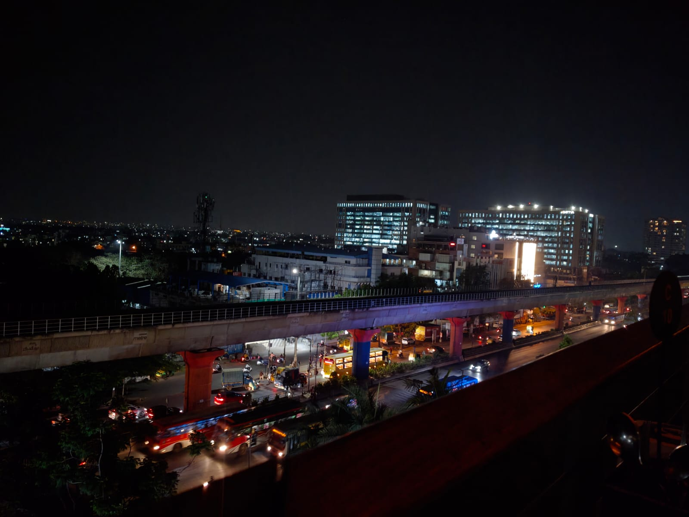

I had gone atop a premium bar and restaurant in Bangalore. The view was terrific. It oversaw the old-Bangalore cityscape. "Old-Bangalore" invokes images of verdant greenery; but this was quite the opposite. The architecture was modern, the ambience was fast-paced and it suggested a sense of urgency that is typical of a go-getter generation. Yet, when I gazed into the distance, the vast expanse induced a sense of calm. A dear friend introduced me to a word which partly described the feeling: sonder. Sonder is defined as
"the profound realization that every random passerby is living a life as vivid, complex, and populated with their own ambitions, worries, and routines as your own."
Someone called John Koenig authored The Dictionary of Obscure Sorrows. He coined this word there.
What I felt was calm - and that felt weird. All this fact-paced life, surely it should evoke some kind of angst about productivity, right? No. It was serenity; composure; an emotion along those lines. I wondered why. One explanation has to do wonder sonder: you're a peck of a peck of a peck. There are millions of people living their own 'vivid, complex' lives. You're taking life too seriously. You have to pass away some day, so might as well enjoy the little moments you have. Timeless though this exhortation is, it felt hackneyed. I'd hear it many times before. You ever feel like you hear so much of some explanation that you've instinctively come to dislike it? Either I'm just being a noncomformist for shits and giggles or it's a part of my personality. I think the deeper reason I dislike it is because of how it is phrased: it minimizes your existence. I know that's not the point: the point is to usher you towards the idea that you must live more fully because you live for such infinitesimally little period of time on this planet. But I think there's a nicer way to do it: it's to suggest that you're a part of something bigger. The human race has braved multiple wars: against nature, but more against itself. The ongoing war is a prime example. But the visceral instinct of the human race is to rage against the dying of light. We survive, whether we like it or not. But when you pit yourself against generations and generations of humans, you begin to wonder what a tremendously rich institution you're a part of. That makes you feel comforted. That you belong, despite everything. If I were to be a self-critic, I'd call whatever I just said a panegyric of the human race - and yes, that's what it is. Can't help that it makes me feel comfortable without minimizing my existence.
I think the other sentiment is more hard to pin down. If I had to find a word, it would be gratitude, I don't know. The beautiful thing about a cosmopolitan, free world is that it is also the site of class divisions. There's no attempt to hide it, and why hide? The dilapidated lorries run on the same road as the exquisitely furnished BMW. The beggars in tattered clothes shouldering inclement weather occupy the same roads as those frantically calling for a cab to ferry them to their homes. What a huge lottery life is. Why am I here, sitting atop this beautiful bar, writing such plush prose, when I might just as easily have been the beggar beneath. I'll never come to terms with it. My apartment overlooks a construction site inhabited by a BPL family. I come out every morning, sit in my verandah with a coffee in my hand reading about how the US fed's interest rate changes influence FPI investment in India. A quick glance at the other side engenders a fleeting moment of pensive reflection: why me? should I atone for who I am, where I'm from? is there any rational justification? what can I do? should I do something?
Back to the bar. It's dimly lit, the background suffused with incoherent chatter - a propitious situation for this kind of thinking. Would I call this sentiment gratitude? Partly. But I hesitate because I don't feel nice about being here. I'm not grateful the same way I'm grateful for my friends showing me a nice time on my birthday. No, it's different. What I'm feeling is lucky. In the sense that I've won a lottery. Not a game of skill, but of chance. The chances of which were undoubtedly miniscule. But those I can't explain. Hinduism has the concept of karma - an attractive workaround to this moral quagmire I'm having: you were probably some paragon of goodness in your last life, and you're rewarded this life. Alas, my rational bent of mind means I'm suspicious of this idea. It's more of a soft incentive to live your life well today, and do good deeds. It works there. But a model that justifies some kids being born with cancer while some are born with a silver spoon? No. That needs more than just karma. So that's why I won't call it gratitude. So after all, I don't feel a sense of positive calmness through and through - it's partly a you're-larger-than-life but you're-also-a-peck-of-a-peck and partly an admixture of contrition and gratitude. John Koenig has his work cut out for him.